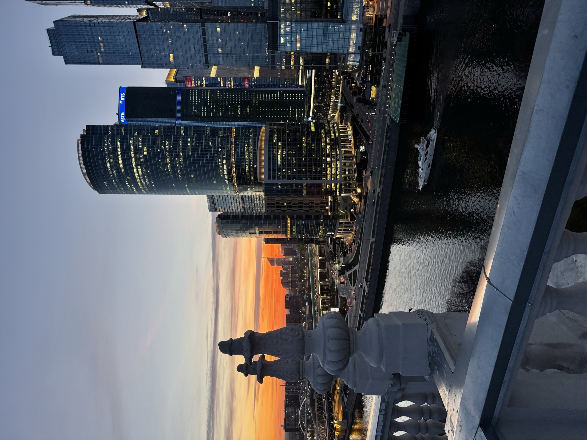

Перед записью
FAQ по прогулкам на крыше
Собрали главное: цена, длительность, погода, безопасность, фотосессии, отзывы и запись через Telegram-бота.
FAQ
Частые вопросы
Сколько стоит прогулка?
Ориентир — от 2000 руб. Актуальные цены, даты и форматы показывает Telegram-бот.
Сколько длится прогулка?
Базовая длительность — 1 час. При возможности можно продлить еще на час за 500 руб. за человека.
Есть ли ограничение по количеству человек?
Жесткого ограничения нет, но для большой компании лучше заранее согласовать формат и удобное время.
Это безопасно?
Мы выбираем проверенные маршруты и заранее объясняем правила поведения. На крыше важно спокойно двигаться и слушать сопровождающего.
Можно устроить фотосессию?
Да, можно прийти со своим фотографом или снимать самостоятельно на телефон.
Есть подарочные сертификаты?
Сейчас сертификаты не выпускаются. Но можно согласовать прогулку как подарок или сюрприз через Telegram-бота.
Где посмотреть отзывы?
Отзывы и живые материалы можно смотреть в Instagram @ilya.melyakin.
Что если плохая погода?
Если погода мешает прогулке, заранее свяжемся и предложим перенос.
Остался вопрос?